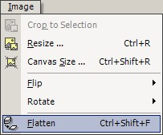

Flatten Image Operation
|  The Flatten Image Operation (Image->Flatten) takes the multiple layers of the image and combines them into one background layer. This will be done automatically when the image is saved in any format other than native Paint.NET (.PDN). |